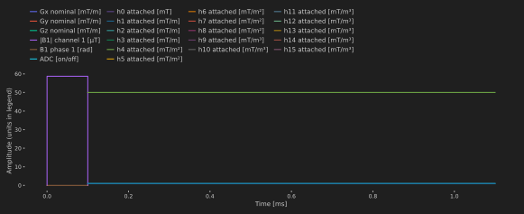
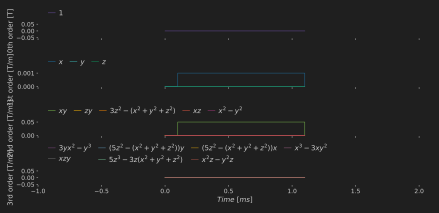
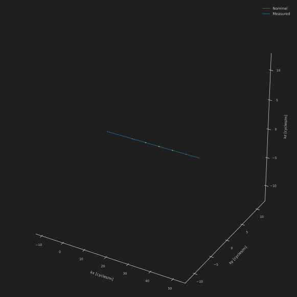
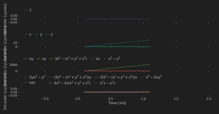
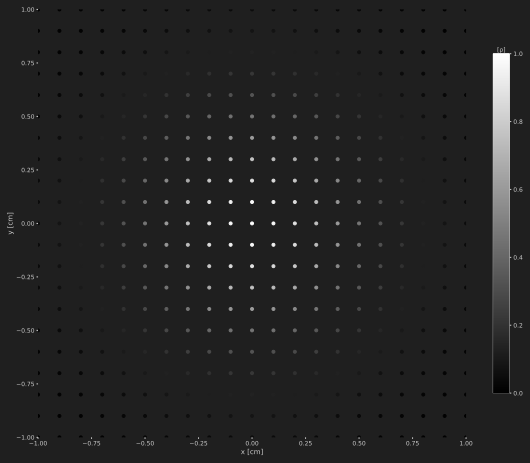

Plotting and Field Inspection
The plt_* helpers use PyPlot and return Matplotlib figures. They do not run a simulation or modify the input waveforms. Save figures explicitly and close them when finished. The examples below run on CPU with no external dataset.
Inspect a sequence and its attached fields
using HighOrderMRISim
import PyPlot
seq = Sequence()
τ = 1e-4
@addblock seq += RF(1 / (4γ * τ), τ)
@addblock seq += ADC(8, 1e-3)
hoseq = HO_Sequence(seq)
hoseq.GR_dfc[2, 2] = Grad(1e-3, 1e-3)
hoseq.GR_dfc[5, 2] = Grad(0.05, 1e-3)
fig = plt_seq(hoseq)
Nominal gradients, RF, ADC, and attached fields have different units, shown in the legend. Attached first-order fields are replacements during precession, not additive gradient errors. For a model comparison, use the same field mask as the simulation; the plots show supplied waveforms rather than applying a mask.
For separate axes by field order, sample all channels on the same time grid:
sampled = discretize(hoseq)
fields = hcat((getproperty(sampled, Symbol("h", term)) for term in 0:15)...)
fig = plt_bfield(fields, 1e-4; units=:T, times=sampled.seqd.t)
Input times are seconds; the plots display milliseconds. units=:T labels supplied values in T/mⁿ and does not rescale them. The raw-array default is :mT; choose it only for values already expressed in mT/mⁿ.
Inspect nominal and attached encoding
fig = plt_kspace(hoseq; source=:both)
plt_kspace shows the three Cartesian first-order coordinates in cycles/m. It does not compress all 16 high-order coefficients into a 3D trajectory. Use plt_kspha for the generalized encoding coefficients returned by get_kspace:
_, _, _, encoding_adc = get_kspace(hoseq)
adc_times = HighOrderMRISim.KomaMRIBase.get_adc_sampling_times(hoseq.SEQ)
fig = plt_kspha(encoding_adc, 1e-4; units=:cycles, times=adc_times)
These arrays use cycles/mⁿ. The legacy raw-array default for plt_kspha is :rad; that option changes labels, not data. An explicit times vector avoids assuming uniformly spaced ADC samples or a particular time origin.
Inspect phantom maps
grid = Grid(21, 21, 1, 1e-3, 1e-3, 1e-3)
ρ = exp.(-(grid.x.^2 .+ grid.y.^2) ./ (2 * 4e-3^2))
obj = HO_Phantom(x=grid.x, y=grid.y, z=grid.z, ρ=ρ)
fig = plt_phantom(obj, :ρ; view_2d=true, axis="axial", markersize=36)
Coordinates are stored in metres and displayed in centimetres. A 2D view is a projection, not a slice: axial uses x/y, coronal x/z, and sagittal y/z. :Δw is displayed in Hz from rad/s. :T1, :T2, and :T2s are displayed in ms. Use :csm_mag or :csm_pha with coil_idx for receive maps; phase is in radians. Empty phantoms and invalid coil indices produce explicit argument errors.
The normalization and standardization image helpers map constant finite images to floating-point zeros. This display preprocessing must not be applied to quantitative simulation/reconstruction comparisons to hide intensity errors.